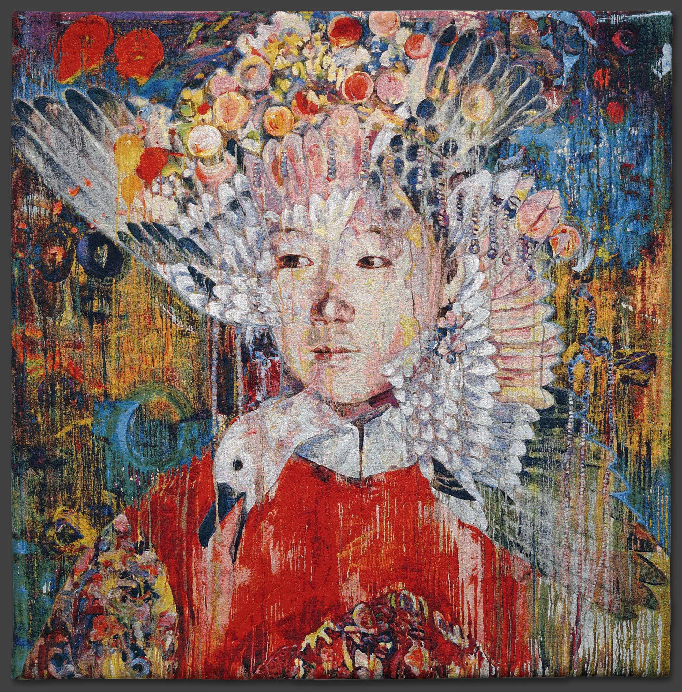

The need to balance political discontent and self-expression
has never been more relevant than it is today. After enduring a
traumatic childhood, a cultural revolution, and moving halfway
across the globe, Hung Liu has mastered the ability to mirror
the experiences of the past with struggles of our own time.
In September 1948, Liu’s family fled the Communist army and
was separated from her father for forty-six years. While
September is obviously referencing the World Trade Center
attack, her reference is created by using her pain of the past.
Hung Liu's website. 
September
Oil on canvas
66in x 66in
Collection of Driek and Michael Zirinsky
She does this by portraying a Chinese bride in traditional garb and a classically rendered Song Dynasty bird. This nod to her heritage reminds the viewer of the hope and cultural richness the Song dynasty brought to a war torn China, and also the promise of life and future with the bride. The way the bird is placed seems like a double exposure photograph. Yet with this large painting, she also manages to acknowledge the violence of the World Trade center attack. Much like Gustav Klimt, she uses rich texture and color to merge the main figure with the background. By doing so, she creates a haunting tone which feels like a vision of spirits. The vision of Liu’s heritage allows the viewer to contemplate the tragedies of our own modern time. The way Hung Liu combines the past with modern day is exemplified in this painting. She created a piece that captures the emotion and pain over the loss of what could have been. Though politically expressive, Liu’s piece lacks judgement. Rather than judgement, she is able to convey the sadness and loss over the promising future that was lost to violence. This piece was chosen because it is representational of much of Liu’s work. The attention to detail and rich backstory placed Hung Liu into the category of one of the greatest artist of our time. She has been featured in the Whitney Museum, the Metropolitan Museum of Art, and the Smithsonian. Her thoughtful compositions and brilliant expression sets her apart.